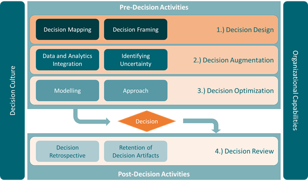
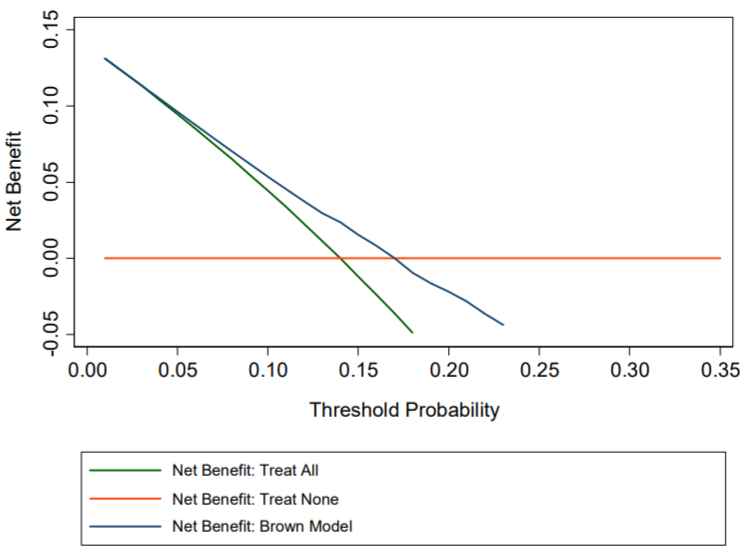
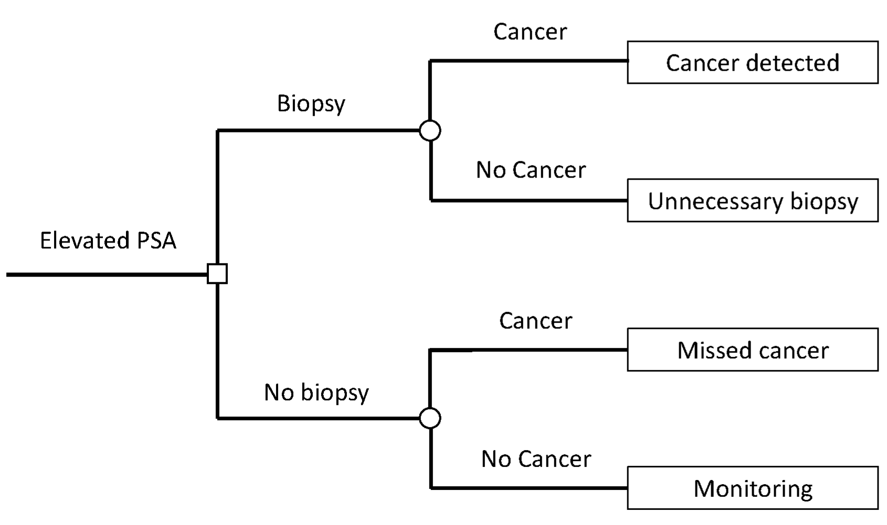
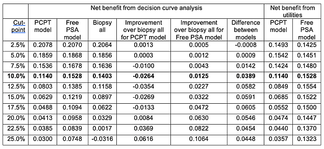

30 Decison Intelligence
TOC
- Misc
- Terms
- Mathematical Terms
- Framework
- Maximizing Expected Utility
- Maximizing Expected Utility Using Decision Rules
- Utility Functions
- Decision Curves
- Conjoint Analysis
- Mental Models
Misc
- Notes from
- Decision Theory video playlist
Terms
- Certainty Equivalent - Amount someone would pay to enter a lottery
- Lottery - decision-making situation usually involving a probability for each outcome
- Risk/ Insurance Premium - The difference between the Certainty Equivalent and Expected Reward
- Its how insurance companies make their money
- Utility - total usefulness or enjoyment or satisfaction received from a decision or action
- Value of Perfect Information (VPI) - The difference between 2 different influence diagrams.
- If one diagram has an additional variable or the same variables but different probabilities of states, then the difference can tell us the value of that extra information (i.e. new variable) or you can compare different scenarios based on the different probabilities for particular states.
Mathematical Terms
- D( ) : Decision-making situation (e.g. Deciding whether to purchase insurance or not)
- Val(A) : Set of all possible actions (e.g. performing a biopsy, taking a drug)
- Val(X) : Set of all possible states or outcomes (e.g. discovery of cancer, death)
- P(X|A) : Probability of a state given an action has taken place
- U(X,A) : Utility function; assigns a numerical utility for each state and action combination
- EU[D(a)] : Expected utility of a decision-making situation (aka lottery) for a particular action, a
.png)
- The goal is to choose an action that maximizes this value (aka Maximized Expected Utility (MEU))
Framework 
- Misc
- Notes from A Framework for Embedding Decision Intelligence into your Organization
- Article seems to draw heavily from Lorien Pratts book, Link
- Pratts Website has a lot of free resources
- Article seems to draw heavily from Lorien Pratts book, Link
- Basics of Causal Design Diagrams (CDD) Link
- The example used is a product manager responsible for the first production run of a new product
- Notes from A Framework for Embedding Decision Intelligence into your Organization
- Enabling Factors
- Any DI framework is unlikely to succeed without a corporate environment that enables the application of decision intelligence techniques to a corporate context
- An organizations decision culture (values, desire for transparency in decision-making, culture of continuous improvement, etc.) is a critical enabling factor that supports a DI approach to decision-making
- Organizational processes such as governance, risk management, and program/project management provide a vehicle for building decision-supportive practices into corporate processes
- An organizations technological capabilities and infrastructure are critical to ensuring that data assets can be stored, transformed, visualized, analyzed, etc. Similarly, these capabilities enable storage/retrieval of decision assets, and provide collaboration capabilities and tooling that are critical to holding facilitated discussions that are critical to decision intelligence
- Pre-Decision Activities
Decision Framing
- Sets the boundaries of the decision what are my actions (levers), outcomes (desired or otherwise), and contingencies (risks and externalities)?
- Questions to address before looking at the data
Decision Mapping Create the CDD by graphically represent causal relationships between actions, intermediaries, and desired outcomes See link above for the basics of CDDs
It presents causal links that serve as points of integration for data and analytic products, metrics, information, predictive models, etc. and in this way orchestrate multiple inputs into a single decision It presents an opportunity to revisit the entire decision process for post-decision review and provides for the re-use of decision artifactsData and Analytics Integration
- identify where and how data or analytics can support downstream pre-decision processes (e.g. modeling), or how to determine whether an action will have a desired outcome
- Attach specific data, metrics, analytics, predictive models, etc. to sub-components of a decision.
- Consider blocks of sub-components (for example, clusters of action-link-outcome or similar) that are known to have relationships that are governed by single aggregate relationship that describes actions and outcomes
- Use CDD as a scaffold for integrating data and analytics.
Identifying Uncertainty
- By proactively identifying areas of uncertainty, we are preparing ourselves to acknowledge the limitations of our decision process and giving ourselves a chance to identify systematically unresolvable uncertainty, or areas where we might reduce the level of uncertainty in our decision-making.
- Sources of uncertainty can be external to your organization, internal, or driven by inherent issues with data-quality
- In the CDD, look at each causal link
- Identify uncertainty from a Rumsfeldian perspective

- Where data and analytics have been integrated
- From a statistical perspective whats the error? what does the quality of the data look like?
- Identify uncertainty from a Rumsfeldian perspective
- Approaches for making decisions under uncertainty
Modeling
- Quantitatively model aggregated action-to-outcome links within the CDD
- Potentially can assess the aggregate impact of action(s) on decision outcomes or intermediates
Approach

- Post-Decision Activities
- Decision Retrospective
- Even the best decisions can be wrong and the most effective decisions eventually become obsolete.
- Dont evaluate the decision totally on the outcome (i.e. outcome bias) but also on the decision-making process
- Retention of Decision Artifacts
- A well documented decision provides a rich opportunity to retain and re-use all these decision artifacts for future decisions
- Main Components
- clear frame, a clear design, potentially a decision map and link to data and analytics, lessons learned
- Sub Components
- any information that has been hypothesized and tested through an action causation outcome link
- Decision Retrospective
Maximizing Expected Utility
- Influence Diagram
- Shapes
- Ovals: random variables
- Rectangles: actions
- Diamond: Utility
- Shapes
- Example (found a start-up or get a job)

- Market and Found both influence utility
- Market gives the probability of there being a bad, moderate, or good market for the start-up, m0, m1, or m2 respectively
- Found is binary action; Found (f1) or Dont Found (f0) a start-up (i.e. get a job)
- U is the utility
- See Utility Functions for details on how this is calculated
- Expected utility calculation for a bad market and founding a start-up:
- U = m0 * U(m0, f1) = 0.5 * -7 = -3.5
- Expected Utility for f1, EU(f1) = (0.5 * -7) + (0.3 * 5) + (0.2 * 20) = 2 which is higher than EU(f0) = 0, so the person should found the start-up
Maximizing Expected Utility Using Decision Rules
- Information is used create a Decision Rule to inform the agent on which Action maximizes Utility
- Expected Utility with prior information
.png)
- To calculate the Expected Utility this equation gets manipulated into
.png)
- ** See the Example for a clearer understanding of how to utilize all of this **
- Basically there are two parts:
- the decision rule distribution (left summation, over Z and A)
- the parent variable to the action (right summation, over W)
- where
.png)
- Says Z is the parent variable to the Action and W is the rest of the variables that arent Z
- Step function the Decision Rule
.png)
- Says for an action value, a, given a parent variable value, z, perform that action (1) if it has the max utility and otherwise dont perform that action (0)
- To calculate the Expected Utility this equation gets manipulated into
- Example (Decision Rule based on prior information)
.png)
- See Maximizing Expected Utility >> Example for details on all variables (except Survey)
- Survey is added and used to create a decision rule, , which will maximize the utility and determine the action (found/not found) either probabilistically (more than 1 agent making a decision) or deterministically (1 agent)
- It surveys people to determine what the probability of bad, moderate, or good market will be
- Example for reading the Survey conditional probability distribution matrix:
- If the true probability that market will be bad is m0 = 0.5, then the probability that survey will say that it will be a bad market, s0, is 0.6.
- The decision rule, (F,S), is a conditional probability distribution shown as the matrix on the bottom with values of S as rows and values of F as columns
- The decision rule is:
- if s0 > f0 (since 0 > -1.25)
- if s1 > f1 (since 1.15 > 0)
- if s2 > f1 (since 2.1 > 0)
- The decision rule is:
- The maximized expected utility = max_utility(s0) + max_utility(s1) + max_utility(s2) = 0 + 1.15 + 2.10 = 3.25
- Note how adding Survey increased the maximized expected utility from 2 (from Maximizing Expected Utility >> Example) to 3.25
- Value of Perfect Information, VPI = 3.25 - 2.00 = 1.25
- Therefore, the agent should be willing to spend less that 1.25 utility points to conduct the survey
- The Expected Utility w/prior information equation gets values substituted into it and is factored a bit.
- PA(x, a) becomes P(M) * P(S|M) * F(F|S) which is Market * Survey * Found
- U(x, a) becomes U(F, M) which is Utility
- The decision rule distribution is factored out of the group leaving a group that is summed over the parent variable to the Action which is Found
- Computing the values to the Decision Rule matrix
- Steps
- Choose a value for each decision rule distribution variable (e.g. S, F)
- For each value of M, calculate P(M) * P(S|M) * U(F, M) then sum all the products
- Repeat for each combination of the decision rule distribution variables
- Example
- Let S = s0 an F = f1
- For m0: 0.5 * 0.6 * -7 = -2.1
- For m1: 0.3 * 0.3 * 5 = 0.45
- For m2: 0.2 * 0.1 * 20 = 0.40
- -2.1 + 0.45 + 0.4 = -1.25
- Steps
Utility Functions
- Misc
- All attibutes/tradeoffs (e.g. money, time, pleasure) that affect the agents preferences must be included into the utility function
- For complicated systems, the Utility is decomposed into separate sub-utility functions with various numbers of variables and actions influencing each. The Total Expected Utility for an action is the sum of the separate expected utilities for that action.
- Example: The action of studying at school
- Different utilities arise from studying (e.g. getting good grades feels good, good job because grades are good feels good, college life may suffer because of increased studying) with different variables influencing each. To get the total expected utility from studying or not studying, youd need to sum the individual utilities.
- Example: Prenatal diagnosis
- Attributes
- Testing - how painful is the testing procedure
- Knowledge - knowing whether your baby has down syndrome
- Down Syndrome - probability the baby has down syndrome
- Loss of Fetus - testing procedure comes with a risk of losing the fetus
- Future Pregnancy - Any issues found may affect future pregnancies
- Total Utility = U(T) + U(K) + U(DS, LoF) + U(LoF, FP)
- Attributes
- Example: The action of studying at school
- Utility Curve Types
- Risk Averse - concave (most common)
- Risk Neutral - straight line
- Risk Seeking - convex
- Expected Reward < Certainty Equivalent which means the Risk Premium is negative
- People willing to pay more for low probability of winning a large reward
- e.g. Gambling at a casino
- Expected Reward < Certainty Equivalent which means the Risk Premium is negative
- Micromort - A 1/1M chance of death is worth $20 (1980 dollars)
- Useful for including death into a utility function and ranking utilities for various attributes
- QALY (quality adjusted life year) - attribute thats common in medical field
- Example (Risk Averse Curve)
.1.png)
- D = Decision-making scenario (aka lottery)
- p = 0.50
- Expected Utility line for the lottery is a linear combination of p and expected reward (represented by the dotted line)
- Low p > expected utility is closer to zero
- High p > expected utility is closer to the point on the curve above the reward value (e.g. $1000)
- Expected Reward for the lottery = p * reward1 + p* reward2 + = 0.50 * $1000 + 0.50 * $0 = $500
- The Certainty Equivalent = $400
- Its the Reward value according to the point on the Utility curve thats horizonally across from the point thats above the Expected Reward on the Expected Utility line .
- Risk Premium = Expected Reward of lottery - Certainty Equivalent = $100
Decision Curves
- Decision Curve Analysis (DCA)
- Compares prediction models by looking at net benefit across a range of threshold probabilities
- tl;dr
- Designed for medical research
- DCA Net Benefit focuses on TP and FP which wont necessarily be an optimal metric for general use outside the medical field.
- DCA Net Benefit has an advantage over Traditional Decision Analysis (DA) Net Benefit (see last section) in that utilities for various scenarios doent have to be estimated.
- This is used for model comparison and not (necessarily) choosing a probability threshold
- The threshold is chosen according to the risk tolerance of the patient (or doctor).
- Example: how large a probability of cancer is acceptable until acceding to having a painful biopsy in order to confirm the presence of the cancer.
- The threshold is chosen according to the risk tolerance of the patient (or doctor).
- Choice of model (by highest net benefit) may depend on the threshold you choose.
- One model may be best only for a certain range of probability thresholds.
- Misc
- Tutorial
- I only read the section for binary treatment variables but survival models were also covered Decision curve analysis for quantifying the additional benefit of a new marker (code button at VERY top of page)
- Tutorial
- General interpretations for all Net Benefit vs Threshold Probability Charts
- Where the treat everyone base models net benefit = 0 (i.e line crosses the x-axis), that threshold probability is the (disease) prevalence.
- If you have a representative sample, then the prevalence can also be calculated by number_with_disease / sample size
- Where the net benefit for a binary predictor variable = 0, the threshold probability is the positive predictive value.
- This is because for a binary variable, a patient with the characteristic is given a risk at the positive predictive value. (?)
- Medical interpretation of net benefit
- Example: Biopsy is taken when the probability of cancer (outcome) is above a certain threshold
- Net benefit is calculated using a probability of cancer model with a genetic marker as the predictor.
- For Net Benefit = 0.03 at a threshold probability of 20%
- Interpretation: Compared to conducting no biopsies, biopsying on the basis of the marker is the equivalent of a strategy that found 3 cancers per 100 patients without conducting any unnecessary biopsies.
- Example: Biopsy is taken when the probability of cancer (outcome) is above a certain threshold
- Where the treat everyone base models net benefit = 0 (i.e line crosses the x-axis), that threshold probability is the (disease) prevalence.
- Reporting
- Increase in net benefit = net benefit of your model - net benefit of the treat-all model (aka base model 1)
output = dca(data=data.set, outcome="cancer", predictors="marker", probability=F,
xstart=0.05, xstop=0.35, xby=0.05, graph=F)
increase_in_nb = output$net.benefit$marker - output$net.benefit$all- DCA prediction models are compared to two base models:
- base model 1: assume that all patients are test positive and therefore treat everyone
- base model 2: assume that all patients are test negative and offer treatment to no one
- The range of threshold probabilities where the net benefit of the predictor > than net benefit for two base models is a measure of the value that the predictor adds
- The
dcafunction isnt part of a package. It was in a zip file for the tutorial. Script located in Code >> diagnostics-classification
dca <- function(data, outcome, predictors, xstart=0.01, xstop=0.99, xby=0.01,
ymin=-0.05, probability=NULL, harm=NULL,graph=TRUE, intervention=FALSE,
interventionper=100, smooth=FALSE,loess.span=0.10)- xstop: ending threshold
- xstart: starting threshold (default: 0)
- xby: stepsize for threshold range
- predictors: variables can be conditonal probabilities (i.e. P(y|X), the fitted values from a logistic regression) or not
- If a predictor is NOT conditional probability, then the probability arg needs set to FALSE for that variable
- probability: whether each predictors values are conditional probabilities or not
- vector of TRUEs/FALSEs.
- default: TRUE for each predictor (even though it says NULL in the arg)
- Length of the vector is the number of predictors
- Steps:
dcafunction (for each predictor, m, and threshold value, t)- Calculate net benefit for base model 1
event.rate=colMeans(data[outcome])
nb["all_treated"]=event.rate - (1-event.rate)*nb$threshold/(1-nb$threshold)vectorized calculation where
thresholdhas all the threshold valuesevent.rateis a constant but I think hes usingcolMeansbecausedata[outcome]is a df with one columnSet net benefit for base model 2 to 0:
nb["none_treated"]=0If probability = FALSE for a predictor
- A simple logistic regression is fit (Y~X) and the fitted probabilties are used
(avg?) TP and FP are calculated for each threshold and predictor
tp = mean( data[data[[predictors[m]]] >= nb$threshold[t], outcome]) * sum( data[[predictors[m]]] >= nb$threshold[t] )
fp = (1 - mean( data[data[[predictors[m]]] >= nb$threshold[t], outcome])) * sum( data[[predictors[m]]] >= nb$threshold[t] )tp = mean( outcome (where predictor >= threshold) * sum( predictor (where predictor >= threshold))
Hes taking an average here and normally TP and FP are counts, so Im not sure how to interpret these
Net benefit is calculated by looping (nested) through each threshold and predictor
# net benefit
nb[t,predictors[m]] = tp/N - fp/N*(nb$threshold[t]/(1-nb$threshold[t])) - harm[m](model based) net benefit = [probability_threshold / (1 - probability_threshold)] * [(TP/N) - (FP/N)]
- If the harm argument is used, (model-based) net benefit w/harm = (model-based) net benefit - harm
N is the number of observations
harm is an arg for adding an extra penalty
Data for examples
.png)
- Marker is a numeric
- cancerpredmarker is fitted probabilities from a logistic regression
Example: Compare Multivariable model to Univariate model
.png)
# fit multivariable logistic regression
model = glm(cancer ~ marker + age + famhistory, family=binomial(link="logit"))
#save predictions in the form of probabilities
data.set$cancerpredmarker = predict(model, type="response")
# dca for each model
dca(data=data.set, outcome="cancer", predictors=c("cancerpredmarker","famhistory"),
xstop=0.35)- Multivariable DCA involves getting conditional probabilities from the multivariable model to use as a predictor in the dca function
- marker is the binary treatment variable with age, family history as adjustment variables
- Interpretation
- The multivarible model with the genetic marker has substantially more benefit than the univariate family history model at low probability thresholds (risk averse) and moderate risk thresholds (risk neutral?).
- Example: A Bad Model
- Interpretation
- The Brown model (fictitious) only shows a positive net benefit for lower threshold probabilities and is harmful (i.e. negative net benefit) even for moderate threshold probabilities.
- i.e. its only has limited benefit for the most risk averse patients
- The Brown model (fictitious) only shows a positive net benefit for lower threshold probabilities and is harmful (i.e. negative net benefit) even for moderate threshold probabilities.
- Interpretation
- Example: Conditional and Joint application
- Approaches (besides base models):
- Biopsy everyone that was determined to be at high risk of cancer; dont use the marker
- Measure the marker for everyone, then biopsy anyone who is either at high risk of cancer or who was determined to have a probability of cancer past a certain level, based on the marker
- joint approach part is risk_group == high risk or marker probability > some_amount)
- Biopsy everyone at high risk; measure the marker for patients at intermediate risk and biopsy those with a probability of cancer past a certain level, based on the marker
- conditional approach part is risk_group == intermediate and marker probability > some_amount)
- Create indicator variables for each approach
- Approaches (besides base models):
# univariate (marginal?) approach
# Treat only risk_group == high risk
# This will be 1 for treat and 0 for dont treat
data.set$high_risk = ifelse(risk_group=="high", 1, 0)
# Treat based on Joint Approach
data.set$joint = ifelse(risk_group=="high" | cancerpredmarker > 0.15, 1, 0)
# Treat based on Conditional Approach
data.set$conditional = ifelse(risk_group=="high" | (risk_group=="intermediate" &
cancerpredmarker > 0.15), 1, 0)- Run dca
dca(data=data.set, outcome="cancer", predictors=c("high_risk", "joint", "conditional"), xstop=0.35).png)
- Interpretation
- Less than 5%, the clinical option of treating all would be superior to any other option, though rarely would treatment thresholds be so low
- Joint approach is best for low risk thresholds (i.e. threshold probabilities) until around 0.26 when the Conditional approach is best, then all 3 seem be minimally beneficial for moderate risk thresholds
- The disadvantage of the joint test is that the marker needs to be measured for everyone, and such tests may be expensive and time consuming
- Treat high risk has pretty near constant net benefit but minimal
- Example: Incorporating Harm
- Same as previous example except the clinician says only willing to conduct 30 genetic marker tests per 1 positive test result
- Potential reasons: difficulty in conducting the test; cost, etc.
- Harm is set to 1 / 30 = 0.03333
- Same as previous example except the clinician says only willing to conduct 30 genetic marker tests per 1 positive test result
harm_marker = 0.0333
# conditional approach: only patients at intermediate risk have their marker measured
intermediate_risk = ifelse(risk_group=="intermediate", c(1), c(0))
# harm of the conditional approach is proportion of patients who have immediate risk multiplied by the harm
# 0.014874
harm_conditional = mean(intermediate_risk)*harm_marker
#Run the decision curve
dca(data=data.set, outcome="cancer", predictors=c("high_risk", "joint",
"conditional"), harm=c(0, harm_marker, harm_conditional),
xstop=0.35)- harm arg
- harm = 0 for predictor == high_risk (i.e. harm not applied)
- harm_marker for predictor == joint (i.e. constant)
- harm_conditional for predictor == conditional (i.e. proportion of patients who have immediate risk multiplied by the harm_marker)
.png)
- Interpretation
- Conditional approach now consistently has the higher net benefit but at a risk threshold around 0.34 it has less benefit than Treat All
- Fewer genetic marker tests means less harm for the Conditional approach
- Harm has a sizeable effect on the Joint approach by lowering its net benefit a few points.
- Joint approach has negative benefit at about 0.31 risk threshold.
- Conditional approach now consistently has the higher net benefit but at a risk threshold around 0.34 it has less benefit than Treat All
- Example Unnecessary interventions avoided
.png)
dca(data=data.set, outcome="cancer", predictors="marker", probability=FALSE,
intervention=TRUE, xstart=0.05, xstop=0.35)This seems to be the FP calculation (See Steps:
dcafunction)Interpretation: At a probability threshold of 15%, the net reduction in interventions is about 33 per 100 patients. In other words, at this probability threshold, biopsying patients on the basis of the marker is the equivalent of a strategy that reduced the biopsy rate by 33%, without missing any cancers.
Comparing Traditional Decision Analysis with Model-Based DCA (article)
- In traditional decision analysis, all potential outcomes must be assigned a utility.
- True Negative no biopsy, no cancer: utility = 1
- the outcome of no biopsy in a patient without cancer, the best possible outcome
- False Positive biopsy, no cancer: utility = 0.95
- Unnecessary intervention
- Assigning this 0.95 is confusing to me since usually higher utility is related to higher satisfaction. It may be that if youre given a positive test, and even with the painful biopsy, its extremely satisfying to get a confirmation of a negative result.
- True Positive biopsy, cancer: utility = 0.80
- finding a high-grade cancer
- False Negative no biopsy, cancer: utility = 0.35
- Missing a cancer increases the risk of toxic treatment, metastasis and death
- True Negative no biopsy, no cancer: utility = 1
- (traditional) net benefit = (Expected utility of the model utility of false negative) (utility of true positive utility of false negative)
- Traditional Net Benefit vs DCA Net Benefit

- Traditional net benefit equals the DCA net benefit at the rational risk threshold (bolded row)
- Rational risk threshold Pt can be obtained as Pt (1 - Pt ) = (utility of true positive utility of false negative) (utility of true negative utility of false positive)
- Pt (1 - Pt ) = (utility of 0.8 0.35) (1 0.95) = 9 and hence Pt = 10%
- As shown in the chart, the treat-all model (blue) can only be used when the threshold probability is less than the prevalence (i.e. treat-all net benefit > 0). This rule is violated when using traditional DA. Therefore, DCA is better suited for model comparison.
- I didnt include the table that shows this. For details, see table 1 at the 25% cut-point in the article.
- Traditional net benefit equals the DCA net benefit at the rational risk threshold (bolded row)
- In traditional decision analysis, all potential outcomes must be assigned a utility.
Conjoint Analysis
- Notes from
- Misc
- Used to understand the relative importance/preference of attributes and quantify the utility a consumer gains from each attribute of a product
- Models the trade-offs a consumer might make while making a purchase decision
- Used to understand the relative importance/preference of attributes and quantify the utility a consumer gains from each attribute of a product
- Assumptions
- Consumers purchase the product which gives them the highest total utility (sum of individual attribute utilities)
- Consumers follow a compensatory decision-making process. Simply speaking, this means that a positive attribute of a product can compensate for a negative attribute, i.e., customers are willing to make trade-offs.
- Steps
- Conduct a market research study
- Brainstorm on attributes that the consumer might use to make a decision on purchases your product
- e.g. Smartphone: Ram, Storage, Camera, Screen, Brand, and Price
- Stratify sample and survey on these attributes

- For each Set (Choice Set), a partipant selects one group of attributes
- Actual questionaire will have 10 to 20 choice sets based on the number of attributes of the product
- Record answers

- Choice = 1 if that Alternative is selected by the participant
- Alternative being the particular group of attributes in that Choice Set
- Id add whichever participant characteristics were used in the stratified sampling for mixed modeling (see next step)
- Choice = 1 if that Alternative is selected by the participant
- Fit a logistic regression
- Brainstorm on attributes that the consumer might use to make a decision on purchases your product
- Conduct a market research study
model <- glm(Choice ~ 0 + Ram + Storage + Camera + Screen + Brand + Price, Data = Data, Family = Binomial)Intercept is forced to 0 so when all the dependent variables are 0, there should technically be 0 utility for the product
Seems like since we stratify sampled, we should use a mixed model approach to get more out of the data
Summarize utilities for each attribute

- the log-odds that we model using Logistic Regression represent the utility the consumer gains from an attribute
- e.g. a $1 increase in Price results in a 0.08 unit decrease in utility on average for our customers
- the log-odds that we model using Logistic Regression represent the utility the consumer gains from an attribute
Calculate the total utility and probability of purchase

- Potential attribute value combinations can be fed to the model and probability of purchase can be predicted
- I dont think this is correct for Total Utility. Utilities have to be on the same scale and therefore all the variables would have to be on the same scale, i.e. all continuous + standardized or all discrete, in order for this sum to be correct.
- Maybe standardized continuous and discrete variables would work
Mental Models
Misc
Types
- Concept Map (system mapping)
- The Iceberg Model (system mapping)
- Six Thinking Hats (problem solving)
- The Cynefin Framework (problem solving)
- First Principles (problem solving)
- Inversion Approach (problem solving)
Concept Map Allows us to visually display a system and pinpoint how the linkages between its parts
- Steps
Formulate a problem question
What are the exact questions that you need to answer to be able to visually represent the system in which the problem is situated? How does X work?, Whats the context of X in which it exists? and How is X linked to Y?
Example: App plays music to induce mood of user. App not performing as well in production as it did during CV How does your algorithm work exactly?
- Whats the app ecosystem like in which the algorithm exists?
- How are the algorithms music curations linked to the users current mood?
Identify key entities and sort them Create a list of the key entities that impact the problem and are linked to it. These entities might be people, algorithms, processes, places, protocols, and more. (commonly around 20 entities)
Sort the list by specificity and/or importance. Helps you to uncover the hierarchyOutline the map and fill it in Start adding entities according to your hierarchy and understanding of the problem
Write the actual action of the said connection by adding phrases to the arrows like adds to, creates, selects from, picks according to Some of these boxes (e.g. algorithm) might have their specific concept maps. It all depends on the level of specificity you need/want to use.
Example (see example description above)

- Steps
Iceberg Model
Helps you to notice what are the underlying causes and implications of a system or event
Components Events: What is happening right now? What is being asked? What do we know for sure?
Patterns**:** Are there any trends? Has this happened before? What historical data do we have? Structures**:** What might produce the patterns? How are the parts connected? Where do the parts originate from and where do they end? Mental Models**:** Are there any beliefs, assumptions, or other mental models on which the system is built? What kind of Mental Models are they and how do they behave?Example: Bank needs forecast of the amount of money taken out from their ATMs, 30 days in advance, and daily Events Follow-up questions: Why? For what use case? Why 30 days? Why daily? How often do they provision the ATM?
Follow-up answers: 30 days seems like a convenient number so they picked that one * knowing when an ATM will run out would make them fill it sooner and/or prioritize it hence the daily request * they provision the ATMs every week * Since they're provisioned weekly, should the forecast be made weekly instead of daily * Does making more forecasts (daily) add more uncertainty to the prediction than a weekly forecast?- Patterns and Structions
- salary when people get paid, ATMs get used more often
- location ATMs at urban locations will be used more often
- weather if the weather is horrible people wont go outside that much
- calendar before events like Christmass people might use the ATMs more. What about other ethnicities and religions?
- Patterns and Structions
Six Thinking Hats Approaching the problem from different standpoints should lead us to the right decision
Each team member get one type of hat * creativity brainstorm ideas and let them run wild in many directions. * positivity ponder all the benefits of an approach/decision. * negativity ponder all the downsides and look for weaknesses. * emotions how do you feel about this? What does your gut say? Why? * analytical focus on the data and be VERY rational. * controlling moderate the other hats so that you make progress. Watch out if one of them becomes too prominent and blocks the others from speaking.The Cynefin Framework
- Problem categories
Clear - everything is clearly defined if straightforward cause-and-effect knowledge
- Often solely requires the use of best practices to solve a problem and the solutions are easy to spot.
- Course of action: understand the problem - categorize it - respond
Complicated - requires some pondering and might have multiple competing solutions
- Characterized by known unknowns that often require some domain expert guidance
- Course of action: understand the problem - analyze it - respond
Complex - obscure problems that arent clear enough at first and require investigation of the problem and its context
- Course of action: investigate and bring the problem to the Complicated category
Chaotic - causal relationships are unclear The goal is to bring the problem down to the Complex category
Disorder - you dont know in what category your problem is in.
- Course of action: dissect the problem into multiple smaller ones and try categorizing those
- Problem categories
First Principles
Boil down the problem to the most basic components that dont need/cant be boiled down further What is the first principle (aka basic truth) for a domain expert might not be the one for you
Process:
- Break the problem down into basic truths
- Socratic Method: you start with one question and pose another one when you get the answer and you go until you reach the basic truth. 5 Whys: Ask ourselves 5 times Why is something the case
- Use the basic truths to find the solution
- Break the problem down into basic truths
Example: see Iceberg Model >> Example: Bank ATM forecasting
- First Principles
- ATMs need to be refilled
- some ATMs need to be refilled sooner than others
- ATMs differ in the amount of money in them
- the bank wants something that works
- the problem were facing is (?)
- Potential approaches based on first principles
- Regression
- Total money left in an ATM daily
- Daily prediction of taken out money
- Classification
- Daily % chance for the ATM to empty out
- Aggregation
- Summed amount of predicted ATM money take-outs
- Optimization
- The best route to take for money transportation
- Survival
- How many days until an ATM is empty?
- Regression
- First Principles
Inversion Approach
View the problem from a different angle and/or consider the worst possible scenarios Start thinking of bad solutions and ask yourself why is it bad and how can it be improved upon
Example: Imagine a project/solution failed. Ask why did it fail. Ask the team to brainstorm together why it failed, what was done/gone wrong, what mistakes we made, what we didnt consider, and more.